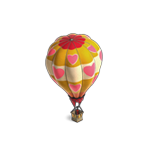

Получено: файл; исходный URL. Изображение подписано на странице-источнике; файл получен с зеркала. Совпадение с оригиналом не проверено. Страница: источник.
Воздушный шар
Социальная версия; архив 21.09.2020- Тип
- Постройки
- Версия и дата
- Социальная версия; архив 21.09.2020
Данные по источнику · Социальная версия · архив 21.09.2020
Предварительно: совпадение заимствованных материалов; не независимое подтверждение. Требуется сверка.
- Покупка
- Уровень 1, 100 000 монет.
- Стадия 1
- 300 бамбука, 3 компаса, 3 каната.
- Стадия 2
- 50 мира, 10 ленты, 15 жёлтой краски.
- Модернизация
- После квеста «Ультиматум»: 150 брёвен пальмы, схема, 150 пружин.


Данные по источнику · браузерная версия; платформа не установлена · дата редакции списка не установлена
Предварительно: Прочитан список. Имена файлов пиктограмм приводятся как есть: они не гарантируют идентификацию материала. Alt-атрибуты источника содержат ошибки. Отдельная статья и дата не проверены.. Требуется сверка.
- Сведения из списка, включая имена файлов пиктограмм
- [рисунок: vozdushnyj_shar.jpg] Доступен с: 1 уровня Стоимость: 100 000 монет Даёт опыта: 4 500 Построить Воздушный шар надо по заданию, но применения ему нет. Стадии строительства: 1. 300 [рисунок: bambuk-urozhaj-zombie-farm-mania.png] + 03 [рисунок: kompas.png] + 03 [рисунок: kanaty.png] 2. 50 [рисунок: mir.png] + 15 [рисунок: kraska_geltaya.jpg] + 10 [рисунок: Lenta.png]
Связанные сущности
нет проверенных связей — требуется сверка.